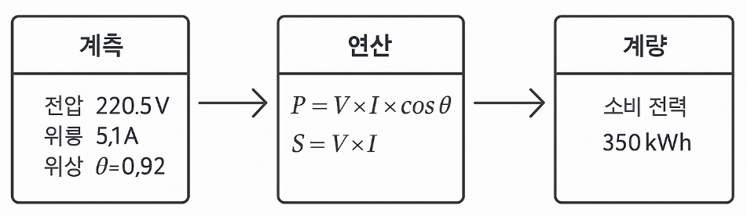

▶ 계측(Measurement)이란?
- 전압, 전류, 온도 등 물리적 양을 정밀 측정하는것.
▶ 계량(Metering)이란?
- 전기,수도 등의 사용량을 측정하여 정량화 하는것
▶ 전력량계에서 계측과 계량의 의미
- 계측 → 계산 → 계량 이라는 흐름이 존재함.
▶ 결론 : 계측은 원시데이터의 수집, 계량은 유의미한 에너지 사용량 정보로 전환하는것 
결과설명 : - 전류센서 등을 통해서 전압과, 전류, 위상등을
계측한다. - 이 데이터로 계산을 통해 실효값, 유효전력, 무효
전력 피상전력, 역률 등을 구한다. - 계산된 전력을 시간에 따라 누적 하면 전력량이
되며 이게 바로 계량이다.
|